|


|
Eind in zicht!
» exacte locatie
 Het is niet te geloven maar we varen toch echt al een paar etmalen achter elkaar bijna de goede kant op. Achtiende dag op zee. Ik heb ze net even moeten tellen omdat ik het niet meer wist. De dagen vloeien haast ongemerkt in elkaar over... Maar dit weekend gaan we toch echt aankomen! Nog 106 mijl te gaan met nog een hindernisje. De stroming komt nu uit het zuidoosten waardoor we naar het westen lekker opschieten. De wind komt net uit de verkeerde hoek om meer naar het zuidwesten te gaan en als we
over de andere boeg gaan varen worden we gedwongen terug naar het oosten te varen en dat willen we natuurlijk niet. Dus varen we door maar moeten oppassen dat we niet door de stroming de eilanden voorbij spoelen. We hebben bedacht dat we het laatste stuk dan maar onsportief gaan motorzeilen want we willen er nou wel zijn. Hopen dat het blijft waaien en we de windvaan kunnen gebruiken, want in die heftige onweersbuien een tijdje terug is onze eletronische stuurautomaat nat geworden van binnen en die
doet het niet meer. 70 Mijl zelf sturen word je niet echt blij van. Ondertussen zijn we ook aan het aftellen naar de evenaar, want de Galapagoseilanden liggen er net onder. Gek idee om binnenkort het noordelijk halfrond voor een lange tijd te verlaten...
Het is niet te geloven maar we varen toch echt al een paar etmalen achter elkaar bijna de goede kant op. Achtiende dag op zee. Ik heb ze net even moeten tellen omdat ik het niet meer wist. De dagen vloeien haast ongemerkt in elkaar over... Maar dit weekend gaan we toch echt aankomen! Nog 106 mijl te gaan met nog een hindernisje. De stroming komt nu uit het zuidoosten waardoor we naar het westen lekker opschieten. De wind komt net uit de verkeerde hoek om meer naar het zuidwesten te gaan en als we
over de andere boeg gaan varen worden we gedwongen terug naar het oosten te varen en dat willen we natuurlijk niet. Dus varen we door maar moeten oppassen dat we niet door de stroming de eilanden voorbij spoelen. We hebben bedacht dat we het laatste stuk dan maar onsportief gaan motorzeilen want we willen er nou wel zijn. Hopen dat het blijft waaien en we de windvaan kunnen gebruiken, want in die heftige onweersbuien een tijdje terug is onze eletronische stuurautomaat nat geworden van binnen en die
doet het niet meer. 70 Mijl zelf sturen word je niet echt blij van. Ondertussen zijn we ook aan het aftellen naar de evenaar, want de Galapagoseilanden liggen er net onder. Gek idee om binnenkort het noordelijk halfrond voor een lange tijd te verlaten...
|
|
|

Eindelijk op koers
» exacte locatie
Het heeft lang geduurd, maar we liggen nu toch eindelijk op koers naar Galapagos! Dat is een hele opluchting, want er leek maar geen eind aan de tocht te komen. En we hebben ook de stroming in de goede richting te pakken, waardoor onze effectieve snelheid ongeveer verdubbeld is. Nog 330 mijl. Voorzichtig rekenen we dat dat in vier dagen zou moeten kunnen, maar we houden wel even een slag om de arm. Je weet maar nooit hier. Verder ben ik nog midden op zee wezen zwemmen. Niet echt vrijwillig, want
we hadden een interessant vistuig bestaande uit lijnen en drijvende jerrycans aan onze boot hangen. Alle zeilen naar beneden en toen ben ik met een touw om mijn middel en een mes in mijn hand het probleem gaan oplossen. De lijn zat gelukkig niet om de schroef en ik kon met twee keer snijden alles loskrijgen. Qua dieren heeft Ilse een tien meter lange walvis bij de boot gezien. En in mijn wacht kwam een setje dolfijnen langs dat niet alleen lafjes hun rugvinnen lieten zien, maar die echt twee meter
hoog uit het water sprongen vlak voor de boot (zoals bekend uit het Dolfinarium). Afgelopen nacht kwamen we terecht in een visgebied en waren we omringd door een stuk of twintig kleine bootjes die iets aan het rommelen waren met boeitjes met knipperlichten. Toch spannend, want je weet dus maar nooit wat ze laten slingeren en waar dat weer aan je boot blijft vasthaken. Toen het licht begon te worden kwam een grotere visboot met een kleintje op sleep vlak voor ons langsvaren. Ze zwaaiden allemaal erg
enthousiast. Even later werd de kleine boot losgegooid en kwam hij met zijn buitenboordmotor snel achter ons aan. "Smokey?" Ha ha, voor dat moment hadden we sigaretten bij ons uit Tenerife. Het merk heet "4.90" en dat is ook meteen de prijs in euros, per slof! Maar ze schenen er toch wel erg blij mee te zijn. Ik heb heel royaal meteen drie pakjes toegeworpen, je hebt toch altijd iets van piratengedachtes in je hoofd dus laten we ze te vriend houden. Later kwam er een tweede boot ook voor sigaretten,
maar die heeft Ilse afgescheept met slechts een pakje. Nu is de zee weer vrij, de wind precies hard genoeg en de zon die schijnt. Heerlijk.
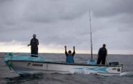
|
|
|
Villa Volta
» exacte locatie
Gelukkig hangt ons kooktoestel cardanisch, zodat 'ie altijd rechtop blijft en het eten in de pan. We gaan nog steeds de hele tijd behoorlijk scheef met de boot en dat maakt sommige dingen best lastig... Het snijden van een ui alleen al, het aanrecht gaat keurig mee scheef dus dat betekent jezelf schrap zetten op zo'n min mogelijk pijnlijke wijze en ondertussen er voor zorgen dat de al gesneden stukjes ui niet van je plankje op de grond glijden. Op dit moment varen we over de 'koelkastgunstige' boeg.
Varen we over de andere boeg, dan wordt het knap lastig, wat zeg ik, haast onmogelijk iets er uit te pakken. De meeste boten hebben een koelkast met een deksel zodat ze er altijd van boven bij kunnen (is wel wat graafwerk maar dan heb je ook wat) maar wij hebben een soort minibarkoelkast met deur. Gelukkig zit er wel een klemmetje op. Hebben we echt iets heel hard nodig dan bundelen we onze krachten en bespreken onze strategie. Ik ga vlak voor de koelkast op de grond zitten, doe het klemmetje eraf
(leg die op het randje, anders doe je daarna het deurtje dicht en bungelt het klemmetje tussen de deur, kun je nog een keer), de deur open en stort me op alles dat er uit valt. Joost kijkt of ik alles tegenhoud, helpt en pakt snel wat we nodig hebben. Dan het moment van alles loslaten en snel snel de deur weer dicht (alles valt weer om), klemmetje er op, niks meer aan doen. Toen opperde Joost het idee dat het wel handig is om van de kajuit een grote, cardanische cylinder te maken zodat alles altijd
rechtop staat. Net als bij Villa Volta in de Efteling alleen moet het dan niet te hard gaan schommelen ;-). Vanmorgen was het even wat rustiger, heerlijk! Ik heb brood gebakken en Joost heeft een vis gevangen met zebrastrepen en daar gaat hij straks paella mee maken, jummie!
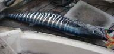
|
|
|
Nog steeds op zee
» exacte locatie
Vandaag zijn we tien dagen onderweg en we hebben nog 511 mijl te gaan, ongeveer de helft van de afstand. Als alles vanaf nu zou meezitten varen we dat in vijf dagen, maar dat lijkt onwaarschijnlijk. Onze streeftijd van 10-11 dagen is dus zeker niet meer haalbaar en we hebben ons daar maar bij neergelegd. De afgelopen dagen zijn we gelukkig niet meer de Vliegende Hollander geweest, maar voortgang blijft erg langzaam. Ik vermoed El Nino als veroorzaker van de abnormale stroming hier. Het is even El
Nino geweest begin dit jaar en misschien is dit nog het staartje. (El Nino is een natuurlijke omkering van de stroming voor de kust van Ecuador en Peru) De tocht lijkt op een labyrint. We zigzaggen heel langzaam in de goede richting op zoek naar een punt waarvan we de positie niet echt weten en dat ook elke dag iets verschuift. Vanaf dat punt zijn de omstandigheden net gunstig genoeg zodat we, plop, ineens in een keer door kunnen zeilen en waarbij het onderweg alleen maar gunstiger wordt. Van een
boot voor ons hebben we hun magische punt gekregen en daar zijn we nu vlak in de buurt. Het is vast alweer verplaatst, maar we hebben wel het gevoel dat we kansen hebben. We spreken ook dagelijks over de te volgen strategie om het punt te vinden, onderscheppen of in te sluiten. Al dwalend zijn we wel helemaal in het ritme gekomen dat eigenlijk alleen bestaat uit wacht houden, eten en slapen. En optioneel lezen of muziek luisteren. Verder is het weer goed. Soms zon, soms wolken, nauwelijks regen en
grotendeels vriendelijke wind. Uit de verkeerde richting, dat wel. Onze beleving is opgeschoven van "afzien" in de richting van "uit te houden", maar het niveau "wat een feest" is nog ver weg hoor.
|
|
|
Vliegende Hollander
» exacte locatie
Eerst was het de windrichting. Daarna vonden we de te hoge golven de schuldigen. Later was het te weinig wind. Teveel wind. Verkeerde zeilen op het verkeerde moment. Verkeerde boot. Te dicht bij de kust. Te ver van de kust. Stroming? Mijn laatste theorie, van gisteren, was dat we in een noordelijke stroming voor de Colombiaanse kust hebben gezeten. In het grote world cruising routes boek stond die niet echt genoemd, maar in een ander boek had ik er iets over gevonden. Goed, nieuwste strategie: alles
doen om naar het westen te komen, weg uit die stroming. Daar zijn we dan de hele dag mee bezig geweest, maar het resultaat viel weer tegen. Waar deze op zou moeten houden bestond hij nog steeds. Dan vallen je ineens in die boeken ook woordjes op als "the current NORMALLY bla bla bla". Vannacht bij het wisselen van de wacht was het zelfs zo erg dat we, na maar weer eens over de andere boeg te zijn gaan varen, we exact dezelfde richting opgingen als waar we vandaan kwamen! Ilse had het over de Vliegende
Hollander. En het lijkt waar, we mogen gewoon geen haven meer aandoen en zijn gedoemd tot eeuwig op zee rondzwalken. Wat echt irritant is, is de GPS. Dat apparaat geeft continu aan wat voor slechte koers we maken en dat we absoluut niet dichter bij de Galapagos komen. Soms kliert ie je dan een beetje door net wat gunstiger aan te geven voor een half uurtje. En als je daar dan blij van bent geworden doet ie daarna weer het tegenovergestelde. Niet grappig. Vannacht heb ik het apparaat op klokmodus
gezet. Alleen de tijd is dan zichtbaar en de rest hoef ik even niet te weten. Volgende keer gaat ie misschien wel helemaal uit, ook geen tijd meer. Ik heb de MP3 speler gevuld met liedjes die me doen denken aan dingen. Zoals Aischa van Cheb Khaled (met zeven personen in een oude Mercedes taxi tussen de kaktussen door scheuren in de Marokkaanse woestijn), Black Velvet van Allanah Myles (dansfeestje groep 8 waar ik uiteraard niet ging dansen maar met de drive-in DJ over zijn apparatuur praten), Egelantier
(met 17 knopen in een megacatamaran naar London zeilen) en ook de Vlieger, maar dat maak ik liever niet openbaar. Zo, volume op een serieus niveau en het is allemaal wel goed met die koers.
|
|
|
Veel geduld
» exacte locatie
De tocht naar de Galapagos is moeilijker dan we dachten... Afgelopen etmaal hebben we voor het eerst weer een beetje in de goede richting kunnen varen. De 3 etmalen daarvoor konden we hooguit dwars op onze bestemming varen, we kwamen dus geen mijl dichterbij, zucht, hoe frustrerend. De wind blijft maar uit de richting van de Galapagoseilanden komen. We hebben veel diesel mee, maar motoren heeft geen zin tegen de golven in, we gaan dan maar 2 knopen terwijl we er zeilend 4 gaan. Dus stampen we nu
al 4 etmalen zo goed mogelijk tegen de wind in, niet echt fijn. We varen steeds over de boeg die ons het beste in de goede richting zet. De koers die we zouden moeten varen is WZW (250 graden) maar we zijn al blij als we pal zuid varen. Op de weerkaartjes die we via de SSB-zender binnenhalen zien we dat hoe zuidelijker we komen, hoe meer zuidenwind, dus dan kunnen we daarmee naar het westen varen. Die weerkaartjes, gribfiles genoemd, worden uitgerekend door een computer en tot nu toe klopt er helemaal
niks van. Lastig dus om een goede strategie te bepalen. We zullen dus vooral veel geduld moeten hebben... Op de foto zie je rechtsboven de ingetekende lijn zoals we tot nu toe gevaren hebben en linksonder de eilanden waarnaar we zo uitkijken! Het regent veel maar gisteren kwam de zon even langs en grappig is dat de zon niet via het zuiden gaat maar van oost naar west recht over je hoofd heen. We zijn dus behoorlijk toe aan een flink pakket zuidenwind...
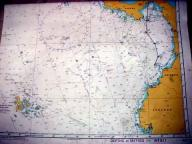
|
|
|
Doldrums
» exacte locatie
'The weather inside the Intertropical Convergence Zone (ITCZ) is typical duldrums weather, with calms or very light winds alternating with squalls, heavy rain and thunderstorms.' Hmmm, dat is wel een hele donkere lucht achter ons. Lijkt 'ie nou dichterbij te komen? Joost denkt dat het wel goed gaat. Het is ook wel raar, want we hebben de wind schuin van voren dus zou je ook het nieuwe weer uit die kant verwachten. Niet helemaal zeker dat deze dreigende lucht ons bespaard blijft kruip ik toch maar
in m'n bed. "Ilse! Ik heb nu je hulp nodig!" Slaperig trek ik gauw een zeiljas aan, de enge wolk heeft ons toch gevonden. Het regent harder dan ooit tevoren en de wind trekt aan. Joost haalt snel snel de fok naar beneden en ik stuur de boot in de wind. Door alleen met het grootzeil op in de wind te gaan liggen zonder dat deze klappert komt de boot heel rustig te liggen, bijliggen heet dat. Een heftig onweer trok over ons heen. Ik ben niet snel bang op Hafskip maar dit vond ik dus echt niet grappig.
Het zicht was nul dus voor de zekerheid heb ik onze positie via de marifoon uitgezonden. Daarna gauw de stekker er uit omdat de flitsen wel heel dichtbij kwamen, Joost zag zelfs een flits het water rood oplichten. Al met al duurde het maar een half uurtje maar daardoor was de zee wel helemaal in de war geraakt en kregen we klotsgolven. Vanmorgen trok nog zo'n bui over ons heen maar die hadden we sneller door dus gauw bijiggen. Deze was gelukkig niet zo heftig als de vorige maar daarna heeft het nog
uren en uren geregend. Dat bijliggen is echt een supertechniek! Het geeft nog meer vertrouwen in de boot doordat het zo goed werkt. Zelfs voor het koken zijn we even gaan bijliggen. De wind is ZZW, precies uit de richting van de Galapagos. Hiermee kunnen we of naar het westen of naar het zuidoosten aan de wind zeilen (wind schuin van voren), een niet zo comfortabele koers. We willen graag de ITCZ uit (die ligt nu ongeveer boven de 6 graden noord) dus hoe meer zuid we doen hoe beter. Op 5 graden noord
krijgen we als het goed is stroming die ons naar het westen gaat wegzetten dus dat is alleen maar mooi. De ITCZ bevindt zich tussen de passaatsystemen. De Noordoostelijke passaat die ons op de Atlantische oceaan voortblies en vlakbij de evenaar en daaronder heb je de Zuidoostelijke passaatwind. In het oosten van de Pacific, waar wij nu dus zijn, is de zone het breedst. Het schijnt zelfs dat je vanaf Tahiti van beide passaatwinden kunt profiteren zonder door de doldrums te hoeven! Op dit moment zeilen
we relaxt en is het superdonker buiten. De maan is er niet en net zag ik een dapper sterretje tussen de wolken tevoorschijn komen. De ITCZ verplaatst zich ook steeds maar volgens het laatste weerbericht zijn we er uit! Aan het begin van mijn wacht zag ik nog wel wat flitsen maar die bleven in de wolken dus die zijn niet eng. We verlangen wel weer naar de zon!
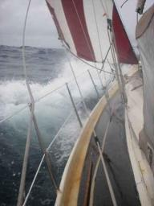
|
|
|
Markt
» exacte locatie
We zijn weer onderweg! Maar voor je daar weer helemaal klaar voor bent staan er nog wat dingen op het programma. De dieseltank tot de nok toe vullen en alle jerrycans (in totaal 160 liter). Onderweg naar de Galapagos kun je veel windstiltes of juist wind op de kop verwachten dus bijna de helft kunnen we motoren als het nodig is. De watertank hebben we ook gevuld met behulp van jerrycans. Je kunt hier namelijk niet met de boot aanleggen dus dat geeft een hoop gesjouw. Zou wel erg mooi zijn als de
watermaker het gaat doen binnenkort! Gisteren de laatste boodschappen gedaan en verse spullen op de markt gekocht. Die markt was meer bedoeld voor de groothandel. Balen van 20 kg. uien en megazakken mango's. Ik vroeg wat de mango's kosten en de hele zak kostte me 3 dollar, bijna gratis dus. Ze waren erg verbaasd dat ik er maar een paar wilde hebben en uiteindelijk had ik er 6 voor een kwartje. Onze buren hadden een enorme tros groene bananen gekocht voor 2 dollar en ananassen (die zijn hier zo lekker)
waren 4 voor 1 dollar. Echt niet normaal hoe goedkoop dat allemaal kan zijn. Ik zoek altijd alles uit en knijp in de tomaten of ze hard genoeg zijn om een week te overleven in de hangmat en Joost hang ik vervolgens helemaal vol met tassen. Thuis hangt onze hangmat nu vol met passievruchten, bananen, mango's, tomaten, uien, knoflook en ananas. Zo, alles binnen! De Atlantische oceaan ligt achter ons en dat hebben we gevierd met een etentje in een gezellig restaurant. Muline, een andere Duitse boot
heeft 10 dagen gedaan over de 900 mijl naar Galapagos, erg netjes. We hebben ook verhalen gehoord van 22 dagen.... Dat is wel erg lang! We begonnen goed, er stond een heerlijk briesje die ons 3 knopen snelheid gaf. Je leest het goed, stond, want nu is de wind weg en loopt de motor. Stiekem ook omdat we allemaal lekkere dingen in de koelkast hebben staan...(die in deze hitte, 36 graden, veel stroom nodig heeft) Iets minder: We hebben een gat in de fok, gelukkig op de zoom dus die heb ik net gemaakt.
Leuk: Tijdens het hijsen van het grootzeil kwam er een booby op one boot zitten. Hij keek heel zielig en volgens mij was het nog een kleintje en wilde die even uitrusten.
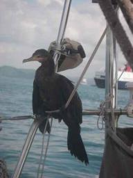
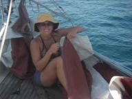
|
|
|
Panamakanaal
» exacte locatie
"If they ask you what speed your boat does, say them you can do 8 knots!", zegt taxichauffeur Rudi die het papierwerk voor het kanaal voor ons heeft geregeld. Ik zeg dat dat met onze boot echt onmogelijk is, met veel moeite misschien 6 knopen. Maar dat maakte volgens Rudi allemaal niks uit. Op deze manier was het goedkoper, ofzo. Zondagavond rond half zes 's avonds kwam op de ankerplaats in Colon de zogenaamde advisor aan boord. Een soort loods die nergens verantwoordelijkheid voor neemt. Maar het
was een aardige vent en hij zei al meteen dat het makkelijk zou worden. We zouden met drie boten aan elkaar als pakketje in het midden van de sluis omhoog gaan. Een grote catamaran in het midden zou het varen op de motor doen en wij hoefden alleen twee lijnen naar de sluismuren steeds in te halen. En het ging ook allemaal prima. Om half tien legden we ons aan een boei op het Gatun-meer en zaten we een lekker broodje hamburger te eten. De volgende ochtend vroeg kwam een andere advisor aan boord voor
het tweede deel van de passage. Dit deel bestaat uit een tocht van 28 mijl over het meer en daarna de tweede set sluizen. Spannend omdat je absoluut op tijd moet zijn bij die sluizen. Zo niet, dan betaal je honderden dollars boete plus eventuele sleepkosten. Normaal maak ik me over motorpech weinig zorgen. We kunnen altijd zeilen en zien wel hoe we een haven in komen, maar nu is dat toch anders. Wat je in ieder geval niet wilt is de motor tot het uiterste opstoken. De eerste vraag van de advisor
is "how fast can you go?". Oh oh, ik voel de bui al hangen. Ik antwoord 6 knopen, wat voor mijn gevoel het uiterste is. Volgens hem is dat te langzaam. We moeten die 28 mijl in vier uur doen om op tijd te zijn. Dat is dus 7 knopen gemiddeld. En volgens de planning moeten wij dat kunnen, wij hebben immers 8 knopen opgegeven. Argh... Rudi $#&$&#$$! We hebben direkt alles losgegooid en zijn met bijna plankgas op pad gegaan. Onder vreselijk veel lawaai van de motor konden we 6,3 knopen halen. De advisor
wist wel een paar stukken af te snijden en dan zouden we het wel moeten kunnen halen. Alles ging volgens schema tot Ilse even binnen was en een lampje op het motorpaneel zag branden. Het bijbehorende alarm was door de herrie niet te horen. Motor oververhit. Er zat niets anders op dan maar iets langzamer te gaan varen. Een half uurtje later was de advisor wat door zijn marifoon aan het praten en kregen we te horen dat het schema een half uur naar achteren was gezet. Dat was een hele opluchting! Uiteindelijk
kwamen we zelfs te vroeg aan bij de sluis. Dezelfde drie boten als de avond daarvoor werden aan elkaar gebonden en soepel gingen we de drie sluizen door naar beneden. De Hafskip ligt in de Pacific! We hebben de boot voor anker gelegd en Ilse is direkt teruggegaan naar Colon om te helpen met Dingo terwijl ik op de boot bleef passen (en klussen). De advisor had zijn schema laten liggen op de boot en toen ik dat eens goed bekeek bleek hij ons met opzet een te vroege tijd te hebben genoemd. In het schema
stond namelijk al de tijd die hij zogenaamd te horen had gekregen! Maar goed, we zijn erdoor. Een van de dingen die ik heb gedaan toen Ilse weg was is het verbeteren van het alarm van de motor. Ik had om onduidelijke reden drie hele goedkope, maar wel oorverdovende, alarmpjes uit een Oce kerstpakket meegenomen op reis en eentje daarvan heb ik omgebouwd naar 12 volt en aangesloten op het motorpaneel. Vanaf nu gaan we geen alarm meer missen. Morgen gaan we nog een keer door het kanaal met onze vrienden
van de Yagoona en daarna willen we snel doorvaren richting Galapagos.
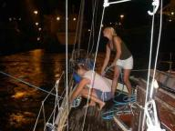
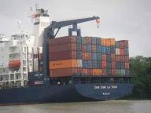
|
|
|
We mogen bijna!
» exacte locatie
Inmiddels liggen we anderhalve week in Colon. We zijn vooral weer veel aan het klussen zodat we tip top in orde zijn voor de volgende oceaan! Eerst hadden we 8 mei als datum om het kanaal door te gaan maar ik heb ze flink lopen stalken en we hebben geluk! Een andere boot viel uit en nu mogen we 6 mei. Dat is dus zondag al. Wij gaan als eerste, 8 mei Dingo en 10 of 11 mei Yagoona. We gaan elkaar helpen zodat we geen linehandlers hoeven in te huren. De Yagoona is van een jong Duits stel, Svenja en
Marc. In Colon weten we onderhand wel welke straten veilig zijn en welke niet (het straatje op de foto wil je dus echt niet in). In sommige stukken moet de taxi je echt voor de deur afzetten! We pakken best wel vaak de taxi omdat het lekker goedkoop is en het vaak regent, lekker luxe, in Nederland kost je dat echt een fortuin. April en mei is hier het regenseizoen dus dat hebben we handig getimed ;-). Woensdag zijn we in Panama City geweest. We hadden een hele luxe bus met airco en ze draaiden een
hele foute, vage film 'Cannibal Holocaust'. Het speelde zich af in het oerwoud terwijl we daar ook half doorheen reden... In Panama de hele dag allemaal shopjes langs geweest omdat dit de laatste plek is tot Nieuw-Zeeland waar we watersportspullen kunnen kopen. Een winkel lag in een gevaarlijke buurt dus vroegen we aan de politie hoe we het beste konden lopen. Dat was toch echt niet de bedoeling dus liepen ze met ons mee. Eenmaal klaar stonden ze buiten op ons te wachten! We kwamen pas van hen af
toen we hen duidelijk hadden gemaakt (in het Spaans, jaja) dat we met de taxi verder gingen. Ze zochten voor ons een taxi (geen andere pasagiers) en pas nadat ze zijn papieren hadden gecheckt mochten we instappen. Na een vermoeiend dagje belandden we bij de Mc. Donalds voor wat eten. We dachten vanaf daar gewoon weer de bus terug te pakken omdat die op de heenweg daar ook stopte. In de stad hadden we verder geen busstation gezien. Toch maar even gevraagd maar zo kon het dus niet! Wat bleek... We
moesten in een gekleurde bus (zo noemen we zelf de creatief geverfde bussen die slechts een kwartje kosten) met daarop 'terminal directo' stappen naar het busstation. Daar kwamen we aan in een enorme hal, het leek wel een vliegveld met enorme rijen mensen. We kregen gelukkig hulp bij het vinden van de bus naar Colon maar die was vol! Maar, geen probleem, er werden wat poefjes uit de laadruimte gehaald en daarop konen we in het gangpad zitten. Dit keer een vage Japanse film met een hoofrolspeelster
die de hele film chagrijnig keek en wat zwaardgevechten. De bus ging in een keer door naar Colon waar die daar op het eind vaak stopte om mensen uit te laten stappen. Weer eens een ander bussysteem, wel lachen dat zo mee te maken.
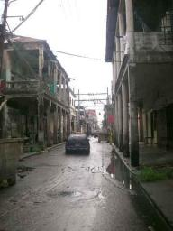
|
|
|
Buitenboordmotortje
» exacte locatie
Zo lang als we op reis zijn is ons buitenboordmotortje al heel vervelend. Tot aan Spanje deed het helemaal niets. Met basale kennis heb ik toen wat roest weggeschraapt en konden we op een van de twee cylinders wat rondpruttelen. In Marokko heeft ie voor teveel geld een nauwelijks nuttige servicebeurt gehad. Ondertussen heb ik de carburateur eens opengemaakt en gepoetst, maar met weinig verbetering. Maar het positieve eraan was dat ik wel steeds meer kennis van het ding kreeg. Als IT'er is die wereld
van metaal en olie toch even wennen. Uiteindelijk is het natuurlijk niets anders. Op Curacao kregen we het grote outboard maintenance troubleshooting en repair boek in ons bezit en toen ben ik echt aan de slag gegaan. Alles open, alles testen met als conclusie een probleem onder het vliegwiel. Volgens het boek "extremely rare", maar dat hadden wij dan weer. Helaas zat het vliegwiel nogal vast en ook met bruut geweld lukte het niet. Ik ben toen naar een outboardwinkel gegaan met een zogenaamde vliegwieltrekker
en die hebben het vliegwiel er voor mij af gehaald. Ik verwachtte natuurlijk een grote bende aan te treffen, maar het zag er eigenlijk heel netjes uit. Jammer jammer jammer. Maar in Cartagena ben ik gaan rondsurfen op internet en vond toen dat alle oude Evinrude motoren hetzelfde probleem hebben: gebarsten spoelen. In die spoelen wordt hoogspanning gemaakt en die lekt dan weg naar het frame via die scheurtjes in plaats van een mooie vonk in de cylinder te maken. Ik had al gezien dat er ook bij ons
een scheurtje zat, maar toen leek me dat geen probleem. Cartagena verkocht wel tweedehandsspoelen voor veel euro's maar die wilde ik niet omdat je dan natuurlijk snel weer hetzelfde probleem hebt. De laatste fix heb ik op de San Blas eilanden gedaan: de spoelen helemaal losgemaakt en te drogen gehangen in het motorruim met draaiende motor. Daarna heb ik ze ingesmeerd met twee vette lagen epoxy. En het was niet te geloven, maar het motortje deed het meteen stukken beter. Direct starten, altijd op
twee cylinders lopen, maar wel af en toe een slagje overslaan. En dat overslaan werd steeds erger bij toenemende temperatuur. Waarschijnlijk toch nog steeds die spoel. En bovendien waren er wel meer mankementen zoals veel roest, een hap uit het schroefje, water in het staartstuk en echt hard ging ie ook niet voor een vier pk. Wij leggen altijd uit dat er twee paarden liggen te slapen. Vanaf Curacao waren we ook al aan het kijken naar een andere motor. Uiteraard tweedehands zoals low budget cruisers
behoren te doen. Maar toen kwam mijn oma met het aanbod de helft mee te betalen, mits we een nieuwe kochten. Dat was wel erg aantrekkelijk! Dus we hebben hier in Panama een nieuwe 3.5 pk gekocht. Gisteren werd hij in de haven afgeleverd en het is echt fantastisch. Een mooi rustig plop plop plop geluidje en ook al mogen we de motor nog niet op vol vermogen gebruiken, hij gaat al bijna net zo snel als de oude met vol gas en enorm veel lawaai. Voor Ilse is het nog leuker, want die durfde eigenlijk niet
meer weg met de oude zonder mij erbij om aan rare dingetjes te friemelen bij problemen. Ze voelde zich een beetje de afhankelijke huisvrouw worden, maar dat is nu dus ook over. Terwijl ik in de boot aan het solderen was, is zij meteen vrienden gaan maken in de haven. Oma, bedankt!
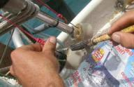
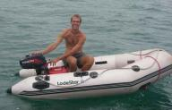
|
|
|
Colon
» exacte locatie
Binnenkort gaan we de Atlantische Oceaan achter ons laten. Gek idee is dat, we varen er al zo lang. Afgelopen zaterdag hebben we de San Blas paradijsjes verlaten en op de motor de 80 mijl naar Colon bij nacht afgelegd. 's Ochtends kwamen er zelfs weer een paar dolfijnen langs de boot springen! Vlak voor Colon lagen een heleboel enorme vrachtschepen voor anker. Die wachten daar tot ze de sluizen in mogen. Sommigen zijn echt gebouwd op de grootte van de sluis (per sluis 300 bij 33 meter). Dit zijn
de grootste sluizen ter wereld! Je gaat eerst drie sluizen achter elkaar omhoog (elk ruim 8 meter hoog) en dan kom je in een enorm stuwmeer op 25 meter boven zeeniveau. Aan het eind van het stuwmeer (na 30 mijl) ga je via drie sluizen weer naar beneden. Dit vraagt aardig wat organisatie. Elke boot is dan ook verplicht om een loods (die geeft aanwijzingen, heeft contact met de verkeersleiding) aan boord te nemen en naast de kapitein 4 man (linehandlers) die elk een lijn van 40 meter lang onder controle
moeten houden in de sluizen. Joost en Martin zijn vandaag samen met een taxichauffeur die alles vaker regelt langs alle instanties gereden om vooral heel veel papieren in te vullen. Joost heeft overal ingevuld dat we 8 knopen kunnen maar we kunnen maar dat kunnen we helemaal niet! Idee hier achter is dat als je harder gaat dan 8 knopen dat je minder borg hoeft te betalen (krijg je niet terug als je niet op tijd door het kanaal vaart). Al die officiele lui weten ook wel dat een kleine boot dat niet
kan maar niemand zegt er wat van. Grappig is dat. De 4 lijnen hebben ze ook meteen gehuurd. Morgen komt er iemand de boot opmeten en dan moeten de lijnen er vast zijn. Het is nog even afwachten wanneer we er door mogen want de wachttijd kan wel 2 weken zijn. We hebben nog wel wat klusjes liggen ;-). Het plan is dat wij en Dingo elkaar door de sluizen gaan helpen zodat we nog maar 1 linehandler hoeven te regelen. Een linehandler kun je inhuren voor 100 dollar en je moet voor eten en een slaapplek
zorgen. Verder krijg je het advies om veel stootwillen langs je boot te hangen. Er is hier dan ook een leuk handeltje ontstaan... Voor 3 euro per stuk kun je autobanden huren en aan de andere kant weer dumpen. Daar worden ze weer verhuurd de andere kant op en zo maar door. Vandaag zijn we Colon in geweest. Je mag alleen door de hoofdstraten lopen, de zijwegen en steegjes zijn gevaarlijk. Je kunt het beste alleen winkels in die een bewaker hebben, die doet dan de deur van het slot, best wel bruut.
Natuurlijk hebben we wel de zijstraatjes ingekeken en dat zag er erg armoedig en slordig uit. Goed nieuws is dat ze hier ook aan goedkope dagmenu's doen, daar hebben we meteen van gesmuld vandaag. Op de terugweg besloten we terug te lopen naar de bijboot (oei oei oei.... volgens de gids word je direct beroofd als je 1 stap buiten de jachtclub zet, tja, die verhalen nemen we tegenwoordig met een korreltje zout) maar we kregen zowaar escortebegeleiding van politie te brommer. In het begin hadden we
het niet door, maar ze reden verdacht langzaam. Toch wel een beetje raar. Je moet er natuurlijk niet als een toerist bij gaan lopen met een dure camera om je nek en dure sieraden om, dan kan ik me wel voorstellen dat je minder veilig bent. Wij voelen ons al lang geen toerist meer en qua kleding vallen we ook niet echt meer op. Ze zijn al aardig verkleurd door de zon met hier en daar een onverklaarbare vlek (je blijft nooit schoon op de boot). En nu maar afwachten wanneer we het kanaal door mogen...
Best spannend allemaal!
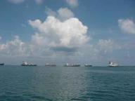
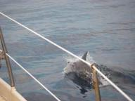
|
|
|
Boomstamkanovissen
» exacte locatie
Bij ons nieuwe eilandje is het weer helemaal ontspannen. Weinig muggen en ook niet al te veel indianen langs de boot die molas verkopen. We liggen sinds eergisteren bij een klein vol met palmbomen begroeid eilandje dat Isla Gunboat heet. Op het eiland woont een familie van tien personen. Opa, oma, kinderen en kleinkinderen. Gistermiddag zijn we een kijkje gaan nemen. Zo gauw als ze ons zagen aankomen werd er een mola winkeltje opgetuigd en de kinderen kwamen meteen nieuwsgierig bij onze bijbootjes
kijken. Zo'n familie heeft het toch leuk voor elkaar met een eigen eiland. We hebben toch maar weer een mola en een paar kokosnoten gekocht en verder wat spulletjes weggegeven zoals kleurpotloden. Ik informeerde nog naar vis, maar dat hadden ze niet. Op dat moment begon er in zee ineens een school vissen op te springen, waarschijnlijk opgejaagd door een tonijntje. Twee jongens gingen meteen de kano in om die tonijn te vangen. Ik had er al wel een beetje over gedacht om eens te vragen of ik mee mocht,
maar na aandringen van Ilse ben ik er snel achteraan gegaan. Dat was allemaal geen probleem en een minuut later zat ik in de holle boomstam en waren we los. De jongen voorin speurde geconcentreerd de zee af op zoek naar de school met een vislijntje in zijn hand. Die achterin was flink aan het peddelen en kreeg de kano daarmee behoorlijk snel vooruit. Ik zat er tussenin met ook een vislijntje. Eenmaal een honderd meter van het eiland werd de mast snel opgezet, het zeil eraan en daar zeilden we richting
de school. Die holle boomstam bleek nog best stabiel te zijn, maar wel lek zodat er af en toe gehoosd moest worden. En dan zo'n zeil met scheuren en lappen dat met allerlei verschillende soorten gevonden touwtjes aan de mast vast zit. Helaas hebben we de tonijn niet te pakken kunnen krijgen, maar het was wel een hele leuke ervaring.
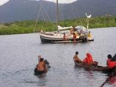
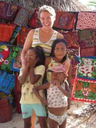
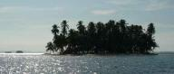
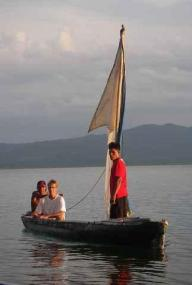
|
|
|
Kuna dorp
» exacte locatie
Na nog een paar dagen luieren, vissen en borrelen hebben we onze boot weer verplaatst. De nieuwe ankerplek was niet zo paradijselijk als de vorige, maar op bijbootafstand was wel een echt dorp. Het vorige dorp was niet veel meer dan een stuk of zes hutten op een eiland met veel kokosnootbomen. Maar dit was toch wel erg apart. Het hele eiland was volledig volgebouwd met hutjes van bamboe en riet. De hutjes aan het water waren bijna allemaal uitgerust met een steigertje voor de boomstamkano en een
klein hokje boven het water afgeschermd door bladeren dat werd gebruikt als wc. In sommige hutten zat een winkeltje waar eenvoudige levensmiddelen of zelfgebakken brood te koop was. Er was zelfs een hut waarvan we vermoeden dat er ook nog een rode tl balk bij hoorde... Het deed mij erg denken aan die film Waterworld, voor wie hem gezien heeft. In totaal leven er op dit eiland 300 indianen en het schijnt een van de traditionelere dorpen te zijn. Velen liepen nog in de oorspronkelijke kleding en tussen
al het bamboe was alleen de school van steen. We hebben ook nog even in een klas gekeken met allemaal kinderen die blij naar ons zwaaiden. 's Middags zijn we met de bijboot een riviertje van het vasteland opgevaren. Dwars door het tropisch regenwoud. Heel mooi. Toen het riviertje te ondiep werd hebben we de boot aangelegd en zijn we verder gewandeld. We hoopten op apen die we de avond daarvoor gehoord dachten te hebben vanaf de boot. Die hebben we helaas niet gezien, maar wel een ananasplant en vermoedelijk
een mini-krokodil. Toen we terug bij de boot waren zijn we haastig weggegaan, want zo vlak bij het land komen er 's avonds ontzettend veel steekbeesten langs. Nu liggen we weer verder uit de kust bij een klein eilandje met strand en veel palmbomen. Weer zoals het hoort.
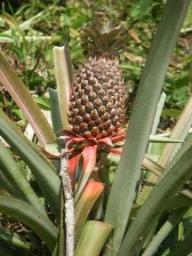
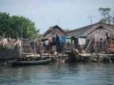
|
|
|
Wat een paradijsje!
» exacte locatie
Ik moet eerlijk zeggen dat ik merkte dat ik verwend raakte... De eilanden van Venezuela waren prachtig maar de plekken daarna vond ik qua natuur toch, ja, ehhh, gewoon niet zo bijzonder ofzo. Toen we op de Rosario's waren had ik echt even een dip. Ik baalde echt van mezelf dat ik niet volop genoot. Dat gevoel is nu weer helemaal weg want we zijn aangekomen in de meest paradijselijke omgeving die ik ooit gezien heb! Okee, stel je het volgende voor... Je ziet om je heen kleine eilanden met spierwitte
zandstrandjes. Op die eilanden staan een heleboel palmbomen die grappig boven elkaar uitsteken. In de verte breken de golven op een rif. Als je de andere kant op kijkt... nog zo'n mooi eilandje maar daarop staan huizen gemaakt van bamboe en palmbladeren waar de Kuna Indianen wonen. Daartussen liggen wij voor anker! We liggen hier echt superstil, zowel qua golven als geluid. Vanmiddag zijn we naar het dichtstbijzijnde eilandje geroeid en zijn dat helemaal rondgelopen. Via strandjes en door het water
langs aangespoelde boomstammen waarop je krabben zag wegschieten. Ook nog even gewommen, het water is hier echt heerlijk. We hebben ook een hele grote pijlstaartrog gezien. Op het eind van de dag kregen we een lift van Dingo (verder ligt hier geen andere boot) naar de Kuna Indianen. De San Blas Eilanden horen bij Panama maar de Kuna's mogen ze zelf regeren. Het lijkt wel of de tijd hier stil heeft gestaan! In de huizen hangen wat hangmatten, verder niks. De keukens zijn buiten en heel simpel. De
Kuna's zien er echt uit als indianen. Ze zijn ook klein, ik was langer dan hen! Meestal hebben ze wel gewone kleren aan maar vandaag hadden een paar zich traditioneel aangekleed. Ik heb een hele mooie armband gekocht (de dollar hebben ze wel ontdekt) en ik kreeg korting toen ik er een mooie berenmok (thanks Corry) bij gaf. Die armband bleek een lange draad vol met kraaltjes te zijn die je dan speciaal moet omknopen zodat er een patroon ontstaat. Op de foto zie je dat ze dat ook om hun benen doen.
Daar ben je wel even mee bezig. M'n armbandje kreeg ik persoonlijk omgeknoopt. Verder had ik ook nog een bod gedaan op een mola (dat is een kunstwerkje van stof). Ik vond 15 dollar te duur dus haalde ik m'n volgende troef erbij, een leuk hemdje dat niet mooi meer zat bij mij en 5 dollar. Iemand die Engels kan vroeg nog hoe duur dat hemdje was geweest, geen idee, dus zei ik dat 'ie 10 dollar was. Maar nee, dat deed ze niet. We hebben nog wat rondgewandeld en toen we terugkwamen stond ze daar met de
mola die ik had uitgezocht... De deal hebben we gesloten met 5 dollar, het hemdje en een fles cola die we even van de boot moesten ophalen. Al met al wel lachen. De Indianen vonden het ook wel grappig. Ze zijn heel aardig en hebben hun eigen taal maar met Spaans kunnen ze ook uit de voeten.
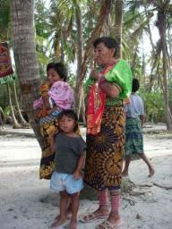
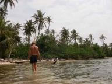
|
|
|

|

|
|
|